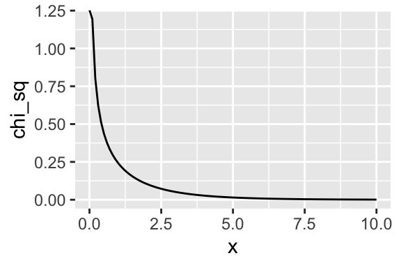

4.4 Size of the LRT
To make the LR test a size-\(\alpha\) test, we need to choose rejection threshold \(c\) so that \(\text{sup}_{\theta \in \Theta_0} \Pr(\lambda_{LR} \leq c) = \alpha\).
To establish this, we need to understand the distribution of \(\lambda_{LR}\) under repeated sampling. Fortunately, there’s a very general result for this.
Suppose the researcher has a point null hypothesis \(H_0: \theta = \theta_0\), then under certain (but not harsh) regularity conditions, \(-2 \log \lambda_{LR} \xrightarrow{d} \chi^2_1\). That is, the distribution of \(-2 \log \lambda_{LR}\) converges to the Chi-squared distribution with one degree of freedom.
We can plot the \(\chi^2_1\) distribution.
x <- seq(0, 10, length.out = 100)
chi_sq <- dchisq(x, df = 1)
data <- data.frame(x, chi_sq)
ggplot(data, aes(x, chi_sq)) +
geom_line()
If the null hypothesis is correct, then \(-2 \log \lambda_{LR}\) is like draws from that distribution. You can see that values above 5, for example, are unlikely.
But to construct a size-0.5 test, we need to compute the particular threshold so that the probability of an incorrect rejection is 0.05. We can use the inverse-cdf function qchisq() to comute this in R.
qchisq(0.95, df = 1)## [1] 3.841459So if we reject the null hypothesis if \(-2 \log \lambda_{LR}\) is greater than 3.841459, then we will incorrectly reject the null hypothesis in about 5% of repeated samples when the null hypothesis is true.
4.4.1 p-Values
A p-value \(p\) is a test statistic between 0 and 1 such that smaller values give evidence against the null hypothesis. A p-value is valid if \(\Pr(p \leq \alpha) \leq \alpha\) for all \(\theta in \Theta_0\) and every \(\alpha \in [0, 1]\).
If a researcher has a valid p-value, then they can construct a size-\(\alpha\) test by rejecting the null hypothesis if \(p \leq \alpha\).
Suppose a test statistic \(T\) (like the LR test statistic) such that large values of \(T\) indicate evidence against \(H_0\). Let \(t\) represent the test statistic obtained from the observed data. Then define \(p = \text{sup}_{\theta \in \Theta_0} \Pr(T \geq t) = \alpha\). This \(p\) is a valid \(p\)-value.
For the likelihood ratio test, we can obtain a p-value by plugging the observed \(-2 \log \lambda_{LR}\) into the cdf of the Chi-squared distribution. We know that (if the null hypothesis is true), then \(-2 \log \lambda_{LR}\) follows a \(\chi^2_1\) distribution. So we simply need to compute the fraction of the \(\chi^2_1\) pdf that falls about our observed LR statistic.
t <- -2*log(0.817622)
1 - pchisq(t, df = 1)## [1] 0.5256929This p-value is greater than 0.05, so we would not reject the null hypothesis of a fair coin.